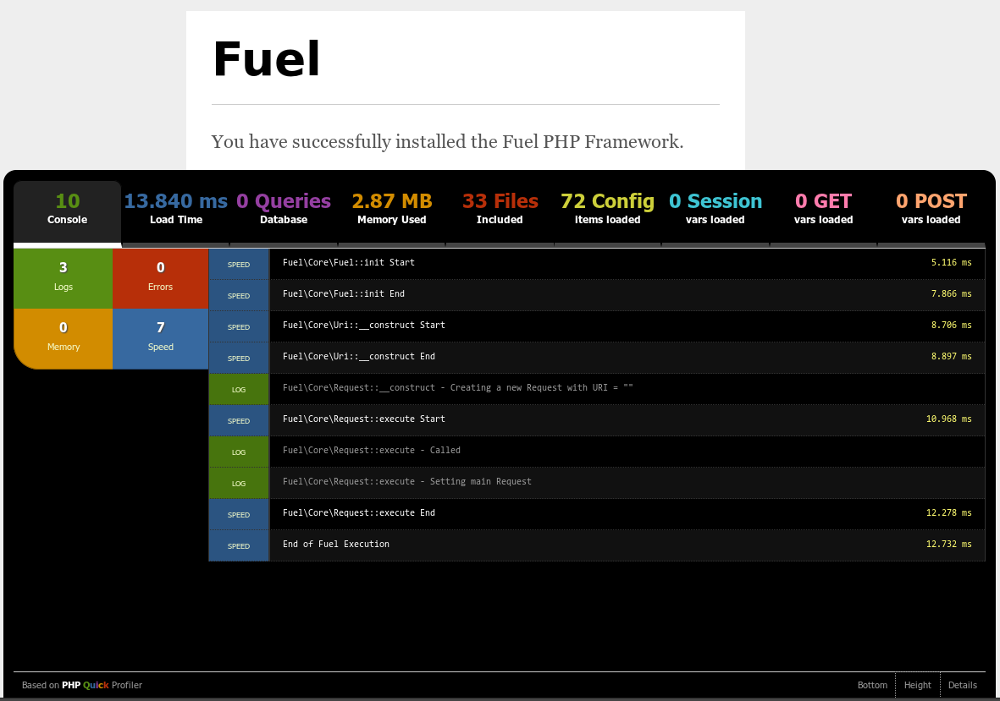

Profiling
FuelPHP绑定的分析器基于 PHP Quick Profiler.
什么是 profiling?
分析器提供分析和调试相关信息而无需添加许多其他开销代码。 你只需要切换配置选项值为true，那么就会开启一个自动化工具来帮助你建立一个快速，一致的审查体验。 由于所有可以使用它，分析器也提供了放置设置。
分析器提供了一个标签界面，你可以查看以下信息:
- Console. 默认标签, 提供错误信息，log，内存使用，执行时间.
- Load time. 请求加载时间，tab主体还将显示详细执行信息.
- Database. 执行查询数，执行了多少时间，如果支持的话，还有查询分析器.
- Memory. 请求总内存.
- Files. 包含的所有PHP文件名，以及它们的大小.
- Config. 请求后的最终配置.
- Session. 请求后的会话存储.
- GET. $_GET 数组内容.
- POST. $_POST 数组内容.
典型的分析器截图:
再分析器截图底部你可以看到三个选项:
- Bottom. 默认，分析器是悬浮的。如果你想看到完整输出的话就单击该选项，分析器将会盖过输出底部，再一次单击将会返回.
- Height. 切换大小.
- Details. 切换信息，如果关闭，只有标签条显示.
应用程序 profiling
默认profiling是禁用的。你可以通过配置Fuel 的config/config.php文件来激活分析器.
'profiling' => true,
分析器开启后，将再你浏览器窗口底部弹出.
数据库 profiling
数据库连接Profiling默认也是禁用的。数据库profiling是基于每个连接来设置开启， 可以通过设置config/db.php文件 'profiler'选项为true来开启.
'profiling' => true,
如果你使用了多个环境，请确保你配置了正确的 db.php 文件.
分析器中显示更多信息
查看关于 分析器 类操作更多信息.